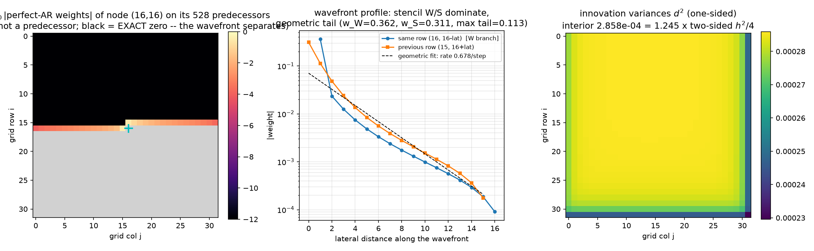
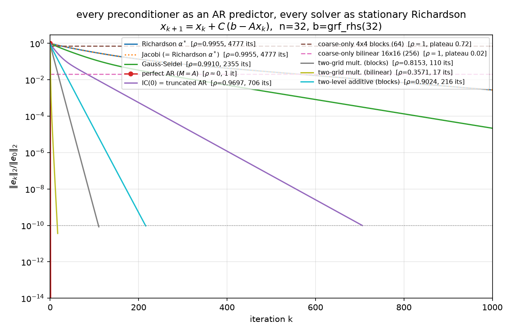

The synthesis report the suite has been building toward: 09 established stiffness = precision and Cholesky = sequential regression on the 1-D chain; 10 measured the same objects in thermal noise; 11 walked them across the 2-D grid inside PCG. This report removes CG entirely and runs every preconditioner as the same stationary predict-and-correct iteration, so that each one's quality is exposed as a bare geometric rate — the spectral radius of its error-propagation matrix — with nothing clever in between. Notation is 09/10/11's throughout: $h = 1/(n+1)$, $A$ = Kronecker-sum Laplacian $/h^2$ (poisson_2d, $N = n^2$, lexicographic row-major $k = ni+j$; 01/02), $B = I - \mathrm{diag}(A)^{-1}A$ the two-sided regression matrix = Jacobi iteration matrix with $\rho(B) = \cos(\pi h)$ (2-D eigenvalues $(\cos(k\pi h)+\cos(l\pi h))/2$), conditional variance $1/A_{ii} = h^2/4$, phiL2R/phiR2L the sequential regressions, $A = (I-\Phi)^\top D_\sigma^{-2}(I-\Phi)$, reversal identity $\mathrm{chol}(A^{-1}) = PL^{-\top}P$, Vecchia = truncated regression — all per the companion notebook whitening_inverse_transposed.nb (~/git0/newton/). Canonical problem: $n = 32$, $\kappa(A) = 440.69$, $b = $ grf_rhs(32) (seed 42), the same right-hand side as 05–08. Every claim below is machine-checked by python/experiments/richardson_ar.py (53 checks, all PASS, fully deterministic, ~6 s; numbers in results/richardson_ar.json), which reuses poisson.poisson_2d/grf_rhs, preconditioners.ic0, and preconditioners.block_average_matrix — no CG anywhere. Compass convention is 11 §1.2's: grid row $i$ increases southward from the top, so $k{-}1$ is the W neighbor and $k{-}n$ the N (previous-row) neighbor.
Every method in this report is the stationary preconditioned Richardson iteration
$$x_{k+1} \;=\; x_k \;+\; C\,(b - Ax_k), \qquad C \text{ a fixed linear operator},$$
started at $x_0 = 0$ and run to relative $\ell_2$ error $10^{-10}$ (cap 20 000 iterations). Read it as predict-and-correct: the residual $r_k = b - Ax_k$ is the visible symptom; $Cr_k$ is the model's prediction of the error from the symptom; the update applies the predicted correction. Since $r_k = Ae_k$ with $e_k = x^\star - x_k$, the error obeys
$$e_{k+1} \;=\; (I - CA)\,e_k,$$
and the asymptotic convergence factor is $\rho(I - CA)$ — literally the per-sweep fraction of structure the predictor fails to explain. A perfect model of $A$ ($C = A^{-1}$) predicts the error exactly and converges in one step; a vacuous model ($C = \alpha I$) leaves $1 - O(h^2)$ of the structure on the table every sweep. For each rung of the ladder the script computes $\rho$ exactly (dense eigenvalues of $I - CA$ at $N = 1024$) and measures the tail slope of $\Vert e_k\Vert $: they agree to six digits for the one-level methods and to 1% for the composite ones, with one honest exception — the bilinear two-grid hits $10^{-10}$ in 17 iterations, before the dominant mode separates, so its generic-start slope (0.3418) undershoots $\rho = 0.3571$ by 4.3%, and only the dominant-eigenvector-seeded slope (0.357104) recovers $\rho$ (§4).
Two deliberate methodological choices, both load-bearing:
Richardson instead of CG. CG's min–max optimality (04) adapts a fresh polynomial to the spectrum every iteration — it makes every $M$ look better than it is and entangles model quality with polynomial cleverness. A stationary iteration has no such adaptivity: what you see is $\rho(I - CA)$, the surrogate's honest per-sweep explanatory power. (§7 puts CG back.)
Error curves, not residual curves. $r = Ae$, so the residual weights each error mode by its eigenvalue — rough modes are overweighted by up to $\lambda_{\max}/\lambda_{\min} = 440.69$ in amplitude. In residual-think, a method that annihilates only the smooth error (§4's coarse-only projections: 98% of the $\ell_2$ error gone in one step) barely registers, and a method that leaves only smooth error (IC(0)'s tail) reads better than it is — measured: at iteration 20 the field is still 23% wrong in $\ell_2$ while the relative residual says 12%, and the under-report widens as the surviving error smooths (1.93× there, 2.79× by iteration 40, worst case $\lambda_{\max}/\lambda_{\min}$ in amplitude). The plateaus and phase transitions below are visible only in $\Vert e_k\Vert $ — which the experiment can afford because $x^\star$ is available from spsolve. Both norms are tracked ($\ell_2$ figure, $A$-norm figure); complete per-iteration histories are in the JSON.
Here is the report's conceptual core, stated as a theorem and verified line by line. Reports 09–11 established that $A$'s rows are the exact two-sided regressions ($B$, weights $1/4$ on stencil neighbors, conditional variance $h^2/4$) and that $\mathrm{chol}(A)$'s columns are the exact one-sided regressions ($\Phi$, $d^2$). Both encode perfect conditional models of the Gibbs field. The entire difference between a $\rho = 0.9955$ solver and a one-step solver is scheduling — what you condition on, and whether the values you condition on are fresh.
(i) Perfect two-sided predictor, applied synchronously = Jacobi, $\rho = \cos(\pi h)$. $C = D^{-1} = \mathrm{diag}(A)^{-1}$ replaces every node simultaneously by its conditional mean given its four neighbors — but the neighbors used are the stale values from the previous sweep. Verified: the error-propagation matrix $I - D^{-1}A$ equals $B$ bit-exactly (np.array_equal), and $\rho(B) = 0.99547192$. Physics: one pass of parallel (synchronous) heat-bath dynamics — every site equilibrates against a frozen snapshot of its neighborhood. Statistics: one synchronous scan of conditional-mean updates (09 §3). Each regression is individually perfect; the schedule wastes it, because a smooth field almost equals the average of its neighbors and each sweep extracts an $O(h^2)$ sliver of news.
(ii) Same weights, applied sequentially with fresh values = Gauss–Seidel, $\rho = \cos^2(\pi h)$. $C = \mathrm{tril}(A)^{-1}$. Verified as an update schedule, not just algebra: one GS sweep coincides (to $10^{-12}$) with the explicit loop "visit nodes in lexicographic order; replace $u_k$ by its conditional mean given fresh W/N and stale E/S neighbors" — the systematic-scan Gibbs sampler with the noise deleted (09 §3, 10 §2.3, Goodman–Sokal / Fox–Parker). Measured $\rho_{\mathrm{GS}} = 0.99096435 = \cos^2(\pi h)$ (Young's theory for consistently ordered matrices; verified to $10^{-6}$), and $\log\rho_{\mathrm{GS}}/\log\rho_J = 2.0000$: merely using what you just computed doubles the rate exponent — 4777 iterations $\to$ 2355, exactly the sampler-community folklore that sequential scans mix twice as fast as parallel ones.
(iii) Perfect one-sided (causal, triangular) predictor = one step. Build the full autoregression: $\Phi$ = strictly-lower prediction weights of every node on all its predecessors, $d^2$ = innovation variances. The script constructs the pair two independent ways — (a) from $L = \mathrm{chol}(A)$ via the phiR2L successor weights and the reversal/automorphism machinery of 11 §3 ($PAP = A$ re-verified), (b) from the modified Cholesky of $\Sigma = A^{-1}$ (Pourahmadi, phiL2R) — agreeing to $7.4\times10^{-15}$ ($\Phi$) and $1.1\times10^{-14}$ ($d^2$), with explicit least-squares regressions on $\Sigma$ submatrices confirming individual rows at an interior node ($(16,16)$: max weight dev $2.4\times10^{-15}$), an edge node ($(0,16)$: $2.2\times10^{-16}$), and the last node ($(31,31)$: $8.3\times10^{-16}$). Then the normal equations of the perfect predictor are the operator:
$$M \;=\; (I-\Phi)^\top\,\mathrm{diag}(1/d^2)\,(I-\Phi), \qquad \frac{\Vert M - A\Vert _F}{\Vert A\Vert _F} \;=\; 1.27\times10^{-16},$$
and because $I - \Phi$ is unit-triangular, $C = M^{-1}$ is back-substitutable — two exact triangular solves, no iteration. Richardson with this $C$ converges in one step: $\Vert e_1\Vert /\Vert e_0\Vert = 3.95\times10^{-15}$ ($\ell_2$), $4.01\times10^{-15}$ ($A$-norm), $\rho(I - M^{-1}A) = 5.5\times10^{-15}$. Triangularity is causality (10 §4): a causal model can be unwound — each node solved given already-solved nodes — which is exactly what the synchronous two-sided model, equally perfect regression-by-regression, cannot do.
One closure identity stitches (i) and (iii) together: the last node $(31,31)$ has every other node as a predecessor, so its one-sided regression is its two-sided full conditional — weights verified exactly $1/4$ on its 2 in-grid stencil neighbors, all other weights $< 10^{-10}$, $d^2 = h^2/4$ to $1.2\times10^{-16}$. The trichotomy is one family of regressions, indexed by how much of the conditioning set has already been resolved.
The pretty coincidence. For this operator, undamped Jacobi is optimally damped Richardson. The Kronecker-sum spectrum pairs up: $\lambda_{\min} + \lambda_{\max} = 8/h^2$ exactly (verified; $8\sin^2 + 8\cos^2$), so the optimal scalar step $\alpha^\star = 2/(\lambda_{\min}+\lambda_{\max}) = h^2/4 = 1/A_{ii} = 2.295684\times10^{-4}$ — the Jacobi step. The two iterations' error histories agree to rtol $10^{-10}$ (4777 = 4777 iterations), and three numbers coincide to eight digits:
$$\rho(B) \;=\; \cos(\pi h) \;=\; \frac{\kappa - 1}{\kappa + 1} \;=\; 0.99547192.$$
This is 05's "Jacobi is a scalar" story with its stationary punchline: on a constant diagonal, Jacobi-the-preconditioner is inert inside CG (116 = 116, 05/09 §3) precisely because the scalar it degenerates to is already the best possible scalar — Jacobi-the-iteration is the optimal no-predictor method, and no-predictor is exactly what CG doesn't need help with.
The whole trichotomy is replayed in exact fractions on the $n = 5$ chain — the perfect two-sided $B$, the causal $\Phi, d^2$, and the one-step solve — as Steps 2–4 of the worked tutorial, 15.
What did the one-step predictor actually learn? Row $k = 528$ of $\Phi$ — node $(16,16)$, 528 predecessors — dissected in the weights-anatomy figure (left: $\log_{10}\vert $weights$\vert $ on the grid; middle: wavefront profile with geometric fit; right: innovation-variance map):

Exact wavefront support (global Markov property). The weights are supported exactly on the last $n = 32$ predecessors — indices 496–527: the trailing (eastern) segment of the previous row, $(15, 16..31)$, plus the leading (western) segment of the node's own row, $(16, 0..15)$ — i.e. 11 §3's elimination wavefront. Max $\vert $weight$\vert $ on the 496 pre-wavefront predecessors: $0.0$, exactly — not small, zero. The wavefront is a separating set between node $k$ and everything scanned earlier, so the GMRF global Markov property zeroes the regression on the far side; algebraically this is the bandwidth-$n$ of $\mathrm{chol}(A)$. The perfect predictor is not global — it is wavefront-wide, which in 2-D is $n$ regressors, which is exactly why exact factorization stops being cheap as $n$ grows.
Stencil dominance and the screening effect. Within the wavefront, the two stencil predecessors dominate: $w_W = 0.3624$ ($3.2\times$ the largest non-stencil weight) on the same-row neighbor $(16,15)$, and $0.3112$ ($2.8\times$) on the previous-row neighbor $(15,16)$ (N under 11's compass; stored as w_S_prev_row in the JSON). The tail decays geometrically along the previous row: fitted rate $0.6785$/step over lateral distances 2–12. Measured profile (|weight| by lateral distance from column 16):
| lateral | 0 | 1 | 2 | 3 | 4 | 5 |
|---|---|---|---|---|---|---|
| same row (W branch) | — | 0.3624 | 0.0235 | 0.0125 | 0.0075 | 0.0048 |
| previous row | 0.3112 | 0.1128 | 0.0482 | 0.0240 | 0.0135 | 0.0084 |
Statistics calls this the kriging screening effect: once the nearest observations are in the conditioning set, they screen the far ones, whose weights decay fast (note the same-row branch collapses faster — the just-observed W neighbor screens its own row hard). Physics calls the same numbers effective couplings from decimation: integrating out degrees of freedom renormalizes the couplings among the survivors, short-ranged but not strictly local. Two asymmetries worth reading off: $w_W > w_{\text{prev-row}}$ — lexicographic scanning breaks the stencil tie in favor of the most recently observed neighbor — and the weights sum to $0.9597 < 1$, unlike the two-sided interior rows, which sum to exactly 1.
The decimation claim, made literal (Schur / Dirichlet-to-Neumann). "Effective coupling" is verified as an identity, both ways: - Eliminate the successors $k{+}1..N{-}1$ of node $k$: row $k$ of the Schur complement $S$, rescaled to prediction form $-S_{k,j}/S_{k,k}$, reproduces the $\Phi$ row to $6.9\times10^{-17}$, and $1/S_{kk} = d^2_k$ to $1.9\times10^{-16}$. - Eliminate the predecessors $0..k{-}1$ (the literal decimation of everything already scanned): the leading row of the trailing Schur complement equals the $\mathrm{chol}(A)$ successor weights of node $k$ ($1.7\times10^{-16}$), which by the reversal identity are the reversed prediction weights of the mirror node $(15,15)$ ($1.7\times10^{-16}$; $1/S_{00} = d^2$ of the mirror). The Schur complement on the wavefront is the discrete Dirichlet-to-Neumann / transfer operator: the perfect AR row is one row of the renormalized Hamiltonian on the not-yet-eliminated boundary.
Innovation variances: one-sided conditions on less, so innovations are larger. $d^2(16,16) = 2.857837\times10^{-4}$ vs the two-sided conditional variance $h^2/4 = 2.295684\times10^{-4}$ — ratio 1.2449. Conditioning on the past only (a half-plane of the lattice) leaves 24.5% more variance than conditioning on all four neighbors. Across the grid $d^2 \in [2.2957, 2.8593]\times10^{-4}$: largest in the first row (few predecessors), essentially constant in the deep interior, and touching the two-sided floor $h^2/4$ exactly once — at the last node, per §2's closure identity.
Honest note: no closed form. On the 1-D chain the one-sided coefficient was a single number with bridge lore behind it — $(n+1-i)/(n+2-i)$ for phiL2R, mirror $i/(i+1)$ for phiR2L (reports 09 §4.2, 10 §3.2: linear interpolation toward the pinned wall). In 2-D there is no such closed form: the wavefront row is a row of a Schur complement of a 2-D Dirichlet Laplacian, dense within the wavefront, and the numbers above (0.3624, 0.3112, decay 0.6785) are measured, not derived. The 1-D chain is the special case where the wavefront has width one.
Now truncate the perfect predictor progressively and watch the rate degrade — the headline figure, all ten methods as the same iteration:

($A$-norm version.) The measured table ($n = 32$; every convergent slope matches its dense $\rho$, per-method PASS lines in the JSON):
| method | predictor it encodes | $\rho$ exact | slope measured | iters to $10^{-10}$ |
|---|---|---|---|---|
| Richardson $\alpha^\star$ | none (optimal scalar) | 0.995472 | 0.995472 | 4777 |
| Jacobi | two-sided, synchronous, stale | 0.995472 | 0.995472 | 4777 (= Richardson, identical histories) |
| Gauss–Seidel | two-sided weights, sequential, fresh | 0.990964 | 0.990964 | 2355 |
| perfect AR | all predecessors (exact $\Phi, d^2$) | $5.5\times10^{-15}$ | — | 1 |
| IC(0) | stencil-only wavefront (truncated AR) | 0.969736 | 0.969736 | 706 |
| coarse-only, 4×4 blocks (64 dofs) | block averages only | 1.0 | stall | plateau $\ell_2$ 0.7230 / $A$ 0.8467 at $k{=}1$ |
| coarse-only, bilinear 16×16 (256 dofs) | coarse field only | 1.0 | stall | plateau $\ell_2$ 0.0203 / $A$ 0.1279 at $k{=}1$ |
| two-grid mult., blocks | smoother + block-spin coarse | 0.8153 | 0.8119 (seeded 0.815303) | 110 |
| two-grid mult., bilinear | smoother + geometric coarse | 0.3571 | 0.3418 (seeded 0.357104) | 17 |
| two-level additive, blocks | neighbors + averages, one shot | 0.9024 | 0.9002 | 216 |
IC(0) = truncated AR, and its two-phase signature. Keep only the stencil entries of the wavefront — each node predicted from $\{k{-}1, k{-}n\}$ — i.e. preconditioners.ic0 reused verbatim (05/09 §6/11 §4; recall 11's measured boundary: IC(0) and covariance-side Vecchia share the pattern but differ by up to $8.32\times10^{-2}$ per coefficient). $\mathrm{spec}(M^{-1}A) = [0.0303, 1.2048]$, $\rho = 1 - \lambda_{\min} = 0.969736$, 706 iterations. The error history is visibly two-phase: over the first 10 iterations the slope is 0.9233 ($\ell_2$) / 0.9083 ($A$-norm) — $2.6\times$ faster in rate exponent than the terminal 0.9697 — then the iteration settles onto its geometric tail (within 99% of terminal by iteration 40). The truncated regressions capture the stencil physics, so rough error dies at the fast early rate; what survives is the smooth content the dropped fill was responsible for, and the terminal rate is exactly the smoothest mode's $1 - \lambda_{\min}(M^{-1}A)$ — 11 §6's smooth ghost, here as a measured slope transition rather than a picture.
Coarse-only Galerkin: one shot, then a wall. $C = Z A_c^{-1} Z^\top$ with Galerkin $A_c = Z^\top A Z$, two coarse spaces: $Z$ = 4×4 block-average indicators (64 dofs, block_average_matrix, reused from 11 §5) and $Z$ = bilinear interpolation from the vertex-centered 16×16 coarse grid (256 dofs). Verified in full: $E = I - ZA_c^{-1}Z^\top A$ is an $A$-orthogonal projector (idempotency $2.3\times10^{-15}$, $Z^\top A e_1 = 0$ to $2.2\times10^{-15}$, $A$-Pythagoras to $6.2\times10^{-16}$), $\rho(E) = 1$, and the iteration is exactly stationary after one step (drift $4.6\times10^{-16}$ over 14 further sweeps). The plateau level is the fraction of the initial error outside the coarse space — by $A$-Pythagoras, plateau${}_A = \Vert (I-\Pi_A)e_0\Vert _A/\Vert e_0\Vert _A$: blocks retain 0.8467 of the initial $A$-norm error (the coarse space captures only $1 - 0.8467^2 = 28\%$ of the energy), bilinear retains 0.1279 (captures 98.4%). Statistically: regression on coarse covariates explains the smooth component in one shot and can never explain the residual — $\rho = 1$ is a model with no fine-scale term. And per §1, this drama is invisible in residual-think: the bilinear step kills 98% of the $\ell_2$ error while barely denting $\Vert r\Vert $, because what it kills is precisely the low-$\lambda$ content the residual discounts.
Two-level: the composite model. Multiplicative (a genuine two-grid cycle: one $\omega = 4/5$ damped-Jacobi pre-smooth, Galerkin coarse correction, one post-smooth; $\omega = 4/5$ is the classical high-frequency-optimal damping for the 2-D 5-point Laplacian, smoothing factor $3/5$ — Trottenberg et al., Multigrid, §2.1; the 1-D model-problem analysis of Briggs–Henson–McCormick ch. 2 gives the analogous $\omega = 2/3$): the implemented cycle's error propagation is verified to be $S(I - ZA_c^{-1}Z^\top A)S$ on a random vector ($3.9\times10^{-16}$ blocks, $1.3\times10^{-15}$ bilinear). Rates: blocks $\rho = 0.8153$ (110 its), bilinear $\rho = 0.3571$ (17 its — the best stationary method on the board, verified $< $ every other non-perfect $\rho$). The generic-start tail slopes (0.8119, 0.3418) sit slightly below $\rho$ because at $\rho \approx 0.36$ the iteration hits $10^{-10}$ in 17 steps, before the dominant mode separates from the cluster; seeding the iteration with the dominant eigenvector of $E$ recovers $\rho$ to six digits (0.815303, 0.357104) — the transient, not the theory, limits the measurement. Additive (Jacobi + coarse applied to the same residual, 11 §5.2's combination, here optimally damped: $\theta = 2/(\mu_{\min}+\mu_{\max}) = 1.0919$ on $\mathrm{spec}(C_0A) = [0.0894, 1.7423]$): $\rho = 0.9024$, 216 its — convergent but far behind multiplicative, which lets the smoother clean up exactly what the coarse correction just exposed instead of having the two terms talk past each other.
Block spins vs geometric interpolation. The gap between the two coarse spaces is the report's renormalization lesson. Block averaging is the Kadanoff block-spin map: crude piecewise-constant coarse fields whose jumps carry spurious energy, so the renormalized coarse Hamiltonian $A_c = Z^\top A Z$ misrepresents the smooth physics — plateau 0.8467, two-grid $\rho = 0.8153$. Bilinear interpolation is the proper geometric multiscale map — coarse fields that are themselves smooth — and everything improves at once: plateau 0.1279, $\rho = 0.3571$. Same Galerkin construction, same smoother; the choice of what a coarse variable means is worth a factor of 6.6 in plateau ($0.8467/0.1279$) and cuts the two-grid rate from 0.8153 to 0.3571 — 110 sweeps to 17.
Mesh (in)dependence and critical slowing down. The same four methods at $n \in \{16, 32, 64\}$ ($n = 64$ via sparse eigsh/eigs; measured slopes agree with $\rho$ to six digits for the one-level methods) — figure:
| $\rho$ | $n=16$ | $n=32$ | $n=64$ | $1-\rho$ ratios vs $h^2$ ratios (3.77, 3.88) |
|---|---|---|---|---|
| Jacobi | 0.98297 | 0.99547 | 0.99883 | 3.76, 3.88 (within 5%) |
| Gauss–Seidel | 0.96624 | 0.99096 | 0.99767 | 3.74, 3.87 (within 5%) |
| IC(0) | 0.89245 | 0.96974 | 0.99207 | 3.55, 3.82 (within 30%, tightening) |
| two-grid bilinear | 0.34913 | 0.35710 | 0.35925 | spread 0.0101 — flat |
Iteration counts tell the same story brutally: Jacobi 1312 → 4777 → 19153; two-grid 18 → 17 → 15. Every local predictor — and IC(0) is still local, just cleverer — has $1 - \rho = O(h^2)$: as the lattice refines, the field's smooth modes become arbitrarily well predicted by neighbors, each sweep extracts less news, $\rho \to 1$. This is critical slowing down, the same divergence 10 §6 measured as MCMC autocorrelation time ($\tau = -1/\ln\rho$: the solver's iteration count and the sampler's mixing time are one number). The two-level method is its multiscale cure: the coarse regression handles the correlation lengths the local predictor cannot reach, at every $h$ — the stationary-iteration face of the multigrid endpoint 05 §5 promised and 11 §5.3 recursed.
| predictor variant | implementation | what it computes |
|---|---|---|
1-D closed-form phiL2R/phiR2L, reversal identity, $A = (I-\Phi)^\top D^{-2}_\sigma(I-\Phi)$ |
python/experiments/verify_statistical_identities.py | chain regressions with closed forms $i/(i{+}1)$, $(n{+}1{-}i)/(n{+}2{-}i)$; QR/Cholesky/Gram–Schmidt duality; 19 checks (09) |
| fitted from fluctuations (thermal snapshots → $\hat B$, $\hat\Phi$, learned Vecchia) | python/experiments/fdt_fluctuations.py | FDT; regression coefficients estimated from noise; snapshot-fitted IC(0)-pattern preconditioner, PCG 116 → 30 (10) |
| 2-D truncated AR: IC(0) vs Vecchia, wavefront/fill anatomy, coarse + two-level PCG | python/experiments/grid_regressions_multiscale.py | the 8×8 dissection, IC(0)-vs-Vecchia dev $8.32\times10^{-2}$, block-average regressions, hot/cold-rod error fields (11) |
| perfect AR ($\Phi$, $d^2$, $M = A$) + the full Richardson ladder of this report | python/experiments/richardson_ar.py | §§2–4: trichotomy, weight anatomy, Schur/DtN identities, truncation ladder, mesh study; 53 checks |
| Wolfram, independent: FDT + $B$-extraction; 8×8 ArrayPlots and exact-$1/4$ checks | mathematica/fdt_fluctuations.wls, mathematica/grid8_regressions.wls | cross-language verification of the regression matrices and factors |
notation source (Pourahmadi parameterization, mchol, phiL2R/phiR2L, reversal identity) |
whitening_inverse_transposed.nb (~/git0/newton/, external companion) |
the notebook whose identities reports 09–12 machine-check |
Shared machinery, reused not re-derived: python/poisson.py (poisson_2d, grf_rhs), python/preconditioners.py (ic0, block_average_matrix), python/pcg.py (the CG harness this report deliberately does not use).
One table, three communities. Every row is machine-checked in the suite except the one marked †, which is a structural analogy:
| statistics | physics | numerics |
|---|---|---|
| innovations / Wold decomposition | thermal kicks | residuals (whitened: $z = L^\top u$) |
| synchronous scan of conditional means | parallel heat-bath dynamics | Jacobi, $\rho = \cos(\pi h)$ |
| systematic-scan Gibbs, noise deleted | sequential relaxation | Gauss–Seidel, $\rho = \cos^2(\pi h)$ |
| Vecchia (truncated conditioning sets) | short-range effective model | IC(0), $\rho = 0.9697$ |
| kriging screening effect | decimation RG / Dirichlet-to-Neumann | Schur-complement fill; wavefront weights, decay 0.6785/step |
| regression on block averages | Kadanoff block spins | Galerkin coarse operator $A_c = Z^\top AZ$ |
| kriging the fine field from coarse† | RG effective field† | prolongation $Z$† |
| perfect ordered AR (all predecessors) | exact decimation, node by node | Cholesky; back-substitution; one-step solve |
| critical slowing down of local samplers | diverging correlation/relaxation time | $\rho \to 1$ like $1 - O(h^2)$; two-level stays flat |
† analogy, not a machine-checked identity: bilinear $Z$ interpolates geometrically — it is not literally the kriging map $\Sigma_{fc}\Sigma_{cc}^{-1}$.
Richardson was this report's instrument, not its recommendation. A stationary iteration pays $\rho^k$ forever; CG wrapped around the same fixed $M$ replaces the geometric factor with the min–max polynomial rate on $\mathrm{spec}(M^{-1}A)$ — roughly $(\sqrt{\kappa'}-1)/(\sqrt{\kappa'}+1)$ per step, with clustering bonuses on top (04). The comparison is now clean because both numbers are on the table: IC(0) costs 706 Richardson sweeps here and 39 PCG iterations in 11 §5.2 — CG's acceleration of the same statistical model, quantified. The division of labor of the whole suite, in one line: the predictor explains what it can; Richardson exposes how much that is; CG accelerates whatever is left. And the ladder keeps going up: the NPO of 06 is a learned, nonlinear predictor — the fitted rung of 10 §5 with the linear regression class swapped for a network — which no longer defines a fixed SPD $M$ at all, and therefore needs the flexible (iteration-tolerant) CG variant that 06 runs. Same frame, one more rung.
Coda. Reports 09–11 kept saying "a preconditioner is a statistical model." This report removed the last hedge by removing CG: run the model bare, as predict-and-correct, and its quality is a single number, $\rho(I - CA)$ — the fraction of the field the model cannot explain per look. The perfect two-sided model, scheduled synchronously, explains 0.45% per sweep; scheduled sequentially, 0.90%; the perfect causal model, scheduled in elimination order, explains everything at once, because triangularity lets prediction become substitution. Everything between those poles — IC(0) at 3%, block coarse spaces that explain 28% once and nothing thereafter, a two-grid cycle at 64% per sweep at every mesh size — is a truncation policy for one object: the regression of each node on what the solver has already understood. 13 names the frame all these rungs are instances of: preconditioning is decoupling.
{kind=link}
{kind=link}
{kind=link}
{kind=link}